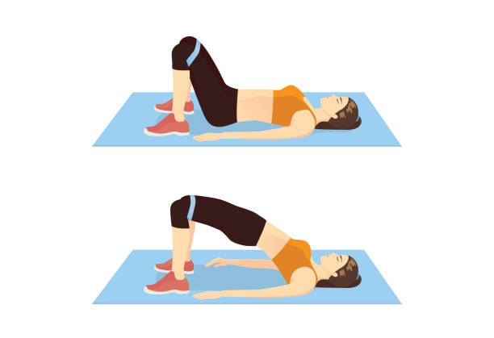
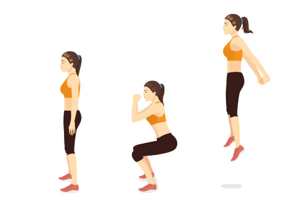
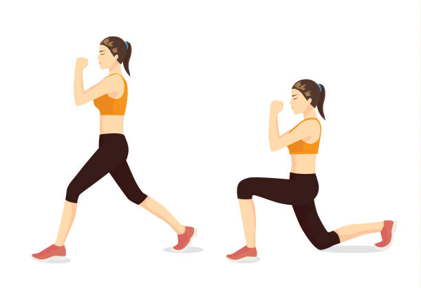

Booty Exercises
Glute Bridge
- Lie on your back, bent your knees and put your feet hip width apart. Put your arms at ypur sides with palms flat ont hte ground.
- Tighten your abdominal and gluteal muscles, press your feet into the floor and lift your hips off the floor. Your body should form a straight line from your shoulders to your knees.
- Hold it for around 5 seconds.
- Slowly lower the starting position and repeat it for around 20 times.
This exercises is good for beginners.
Jumping Squats
- Stand in a squat position. Make sure your feets are slightly wider than shoulder-width apart. Put your arms at your sides.
- Lower your body until your thighs are parallel to your knees. As you squat, move your arms out in front of you, palms together.
- Jump off the ground. Try to push your feet as high as possible. You can extend your arms.
- Squat back down and repeat it for around 20 times.
If you have problems with your knees or ankles, consult a physical therapist before trying jump squats!
If it's to difficult for you at the beginning, try normal squats (without jumping).
Donkey Kick Backs
- Start on all fours. Put your feet hip-width apart and hands under your shoulder. Make sure your neck and spin are neutral.
- Begin to lift your rigth leg with your knees bent until your rigth thigh is parallel to the ground. Use your glute to press your foot.
- Return back to the startin position and lift your left leg.
- Repeat this exercise for around 20 times.
This exercise is perfect for beginners. As an increase, lift your leg straight up!

Walking Lunges
- Start standing with your feet shoulder width apart.
- Step with the right foot forward, put the weight into your heel.
- Bend your right knee and lowering down until it is parallel to the floor. Pause for a beat.
- Without moving your rigth leg, move your left foot forward and repeat the same movement.
- Perform this for around 20 times on each leg.
If you want a little challenge, hold a pair of weights (you can also use bottles filled with water) at shoulder height, elbows bent in front of body.
Rainbows
- First of all, get down on all fours. Straighten your left leg by pulling the toe away from you.
- Take your left leg to the left side as far as possible and touch the floor with your toe.
- Move your leg on the right side and make sure, that your are touching the ground.
- Imagine your are drawing a rainbow with your toes!
- Do it again for around 20 times on each side.
You can also do this on your elbows.
Side Lying Leg Raises
- Lie down on your right side on a mat or the floor. Put your feet on top of each other. Make sure your body is in a straight line!
- Place your left hand for extra support in front of you or let it rest on your leg or hip. Place the other hand under your head.
- Raise your left leg as high as possible. You have to stop, if you you feel the muscles flex in your lower back or obliques.
- Inhale and lower your leg back down to the right leg.
- Repeat this for around 15 times, then switch to the other side.

Hip Abduction
- Stand tall. You can hold on something with your hand for support!
- Lift one leg away from your body, with your toes pointed forward. Not up!
- Start the movement from your hips, not by leaning your torso to the side.
- You can see, if it helps to feel your glutes working more, when you are moving your leg a little bit backward or leaning slightly forward.
- Do it for around 20 times, then change on the other side!
This is a great exercise for extra work on your side glutes!

Cursty Lunges
- Start standing tall with your hip-width apart.
- Take a step back to the side with your right leg, so that it crosses behind your front leg, while your hips are still pointing forward.
- Make sure, that you are keeping the weight mainly on the front leg!
- When your are getting back, push the heel of the left foot to the ground.
- Repeat it for around 20 times on each leg!